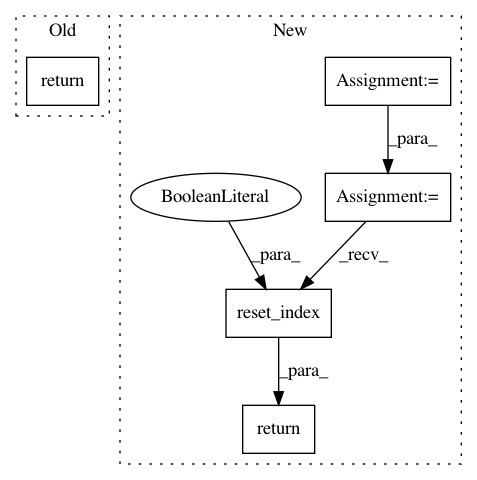

11d76fd4eb2ef5ecb3c062ff4ff4f39d64ae5741,cnvlib/genome/_merge.py,,_merge,#Any#Any#Any#,20
Before Change
if "strand" not in cmb:
cmb["strand"] = merge_strands
table = table.sort_values(groupkey + ["start", "end"])
return (table.groupby(by=groupkey,
as_index=False, group_keys=False, sort=False)
.apply(_merge_overlapping, cmb))
def _merge_overlapping(table, combiners):
Merge overlapping regions within a chromosome/strand.
After Change
if "strand" not in cmb:
cmb["strand"] = merge_strands
table = table.sort_values(groupkey + ["start", "end"])
cmb = {k: v for k, v in cmb.viewitems() if k in table}
out = (table.groupby(by=groupkey,
as_index=False, group_keys=False, sort=False)
.apply(_merge_overlapping, cmb)
.reset_index(drop=True))
// Re-sort chromosomes cleverly instead of lexicographically
return out.reindex(out.chromosome.apply(sorter_chrom)
.sort_values(kind="mergesort").index)
def _merge_overlapping(table, combiners):
Merge overlapping regions within a chromosome/strand.
In pattern: SUPERPATTERN
Frequency: 3
Non-data size: 5
Instances
Project Name: etal/cnvkit
Commit Name: 11d76fd4eb2ef5ecb3c062ff4ff4f39d64ae5741
Time: 2016-11-24
Author: eric.talevich@gmail.com
File Name: cnvlib/genome/_merge.py
Class Name:
Method Name: _merge
Project Name: metagenome-atlas/atlas
Commit Name: 3ab0e54a3ce88c7018a34192461dd47e5867d357
Time: 2017-01-28
Author: joe.brown@pnnl.gov
File Name: atlas/tables.py
Class Name:
Method Name: col_split
Project Name: etal/cnvkit
Commit Name: 1fe319ef49168c2c7c8d10a7c426c1414521d164
Time: 2016-10-28
Author: eric.talevich@gmail.com
File Name: cnvlib/tabio/genepred.py
Class Name:
Method Name: read_refflat